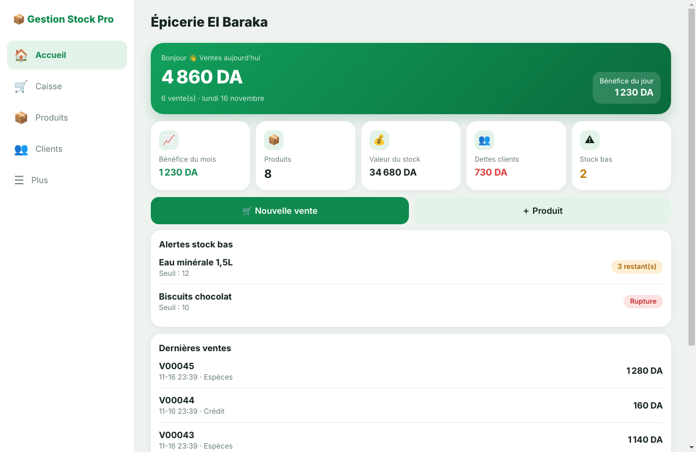
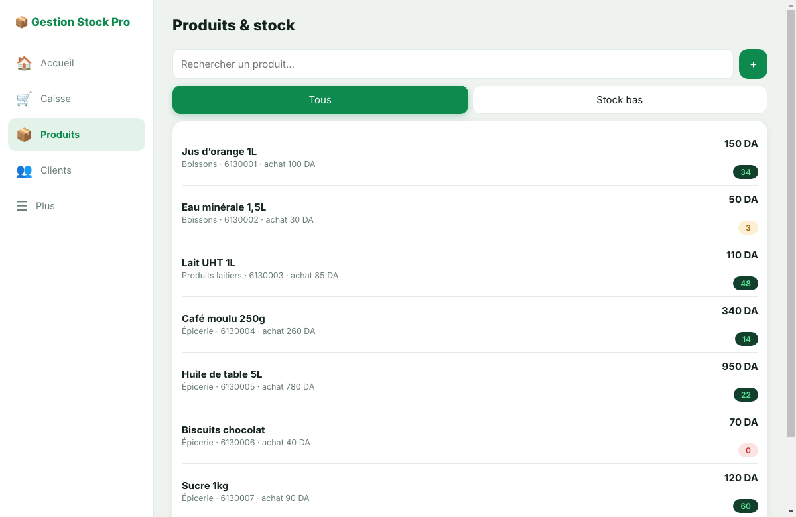

Windows 10 et 11 · installation en 1 minute · fonctionne hors ligne
Le lien de téléchargement n’est pas encore configuré : ouvrez cette page depuis GitHub Pages ou renseignez la variable REPO dans le fichier.

Tout l’essentiel, rien de superflu
📦
Produits et stockFiches produits, codes-barres, entrées, sorties, ajustements et historique des mouvements.
🛒
Caisse rapideAjout par code-barres (lecteur USB compatible), remise, paiement espèces, CCP/banque ou crédit.
👥
Clients et dettesSuivi du reste à payer, encaissement des paiements et historique d’achats de chaque client.
⚠️
Alertes de stock basVoyez d’un coup d’œil les produits à recommander ou en rupture.
📊
Bénéfices et rapportsVentes du jour et du mois, bénéfice brut et net, meilleures ventes, dépenses.
💾
Sauvegarde automatiqueUne copie de vos données chaque jour, et export manuel d’un fichier de sauvegarde.

Installation en 3 étapes
Téléchargez le fichier d’installation avec le bouton vert.
Ouvrez-le et suivez l’assistant. Si Windows affiche « Windows a protégé votre PC », cliquez sur Informations complémentaires puis Exécuter quand même (le programme n’est pas encore signé numériquement).
Lancez Gestion Stock Pro depuis le raccourci du Bureau et ajoutez vos premiers produits.
Questions fréquentes
Où sont enregistrées mes données ?
Sur votre ordinateur, dans Documents\Gestion Stock Pro. Les sauvegardes automatiques sont dans le sous-dossier « sauvegardes ». Copiez ce dossier sur une clé USB de temps en temps.
Faut-il une connexion Internet ?
Non. Tout fonctionne hors ligne.
Puis-je l’utiliser sur plusieurs ordinateurs ?
Cette version est prévue pour un seul poste. Les données ne sont pas synchronisées entre plusieurs ordinateurs.